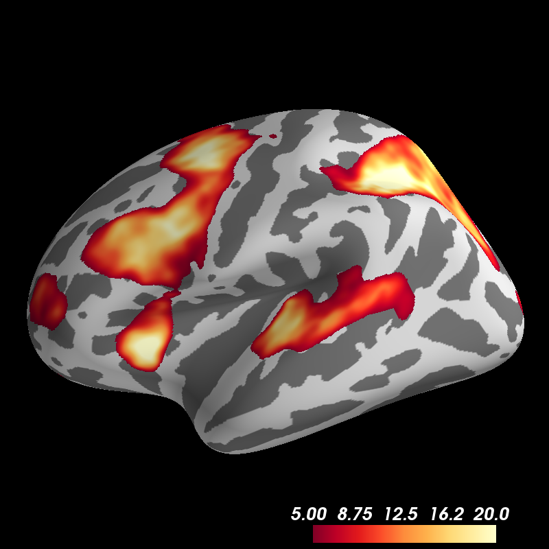

Note
Click here to download the full example code
Display fMRI Activation¶
The most straightforward way to plot activations is when you already have a map of them defined on the Freesurfer surface. This map can be stored in any file format that Nibabel can understand.
from surfer import Brain
print(__doc__)
"""
Bring up the visualization window.
"""
brain = Brain("fsaverage", "lh", "inflated")
"""
Get a path to the overlay file.
"""
overlay_file = "example_data/lh.sig.nii.gz"
"""
Display the overlay on the surface using the defaults to control thresholding
and colorbar saturation. These can be set through your config file.
"""
brain.add_overlay(overlay_file)
"""
You can then turn the overlay off.
"""
brain.overlays["sig"].remove()
"""
Now add the overlay again, but this time with set threshold and showing only
the positive activations.
"""
brain.add_overlay(overlay_file, min=5, max=20, sign="pos")
Total running time of the script: ( 0 minutes 0.882 seconds)